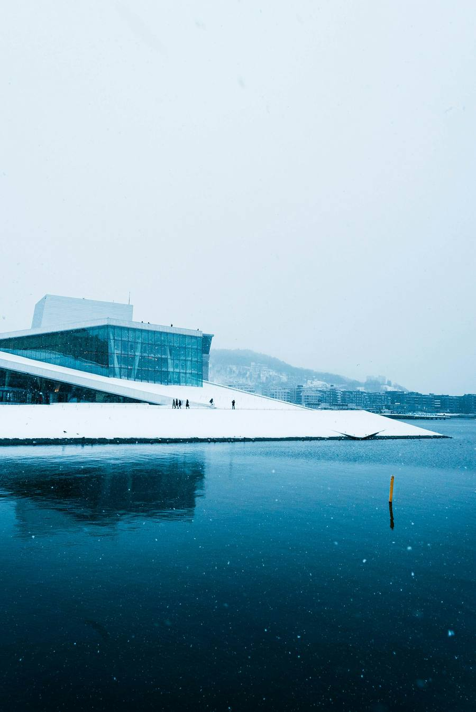

Orientation
What to know before you go and while you're in Norway. Read it before the pre-program meeting on Nov 5, and keep it handy on your phone.

Travel documents
- Passport. Your passport must be valid for at least three months after we leave Norway on Jan 24, and issued within the last 10 years. Six months of remaining validity is the safer standard. Check the date now. Renewals take weeks.
- Visa. U.S. citizens do not need a visa for a stay under 90 days. Carry a copy of the program details, the hotel names, and your return flight in case a border officer asks why you're visiting.
- ETIAS. The EU plans a new online travel authorization for U.S. travelers, called ETIAS. As of October 2026 it has not started, and you don't need it yet. If that changes before January, we'll tell you. Avoid websites that charge you to "apply early." They are not official.
- Border control. Europe now registers visitors electronically at the border. At passport control in Amsterdam or Oslo, you may have your photo and fingerprints taken. Allow extra time.
- Students without U.S. passports. Entry rules differ by citizenship. Check with the Study Abroad office early.
Flights and luggage
- Flights. Your flight is included in the program cost, and St. Thomas books it. You must travel with the group to and from Norway. Flight times are on the Home page.
- Baggage allowance. Check the allowance on your ticket. Delta and KLM rules vary by fare type, so don't assume a free checked bag.
- Carry it yourself. You will move your own luggage on and off trains, and between the train stations and both hotels. Pack only what you can manage alone on icy sidewalks.
- A day bag. Bring a backpack for daily use. Most days we leave the hotel for several hours.
Where we stay
Lillehammer, Jan 8 to 11
Scandic Victoria, in the center of Lillehammer.
Oslo, Jan 11 to 24
Radisson Blu Plaza, next to Oslo Central Station. It has a pool, sauna, and fitness room on its top floors, free for guests.
- Rooms. In Lillehammer you share a room with two other students. In Oslo you share a room with one other student. A roommate form goes out after the Nov 5 meeting.
- Minnesota. During the Minnesota days of the course, you arrange your own housing.
- Emergency meeting place. The front desk lobby of whichever hotel we're in.
- Hotel address. Take a hotel business card from the front desk and keep it with you. It helps if you get lost or need to show a taxi driver where to go.
- Laundry. The hotels offer laundry service for a fee. Most students pack enough clothes to skip it.
- Wi-Fi. Free in both hotels, and available in most cafés and public places.
- Free weekend travel. If you leave Oslo Jan 15 to 17, your lodging is your own cost. Email Hans your plans by Wed, Jan 13: who you're with, where you're going, when you leave and return, and how to reach you.
Food and money
- Meals included. Breakfast every day at both hotels, group dinner on Jan 8 in Lillehammer, catered lunch on Jan 18, group lunch on Jan 20, and breakfast boxes on Jan 24. All other meals are on you.
- Costs. Norway is expensive. As a rough guide from recent years: a mid-range restaurant meal runs 250 to 400 NOK, and fast food or street food 100 to 150 NOK. Use the currency converter for today's rate.
- Saving money. Grocery stores such as Rema 1000, Kiwi, and Coop Extra are the cheapest option. Many students buy lunch supplies there.
- Paying. Cards are accepted almost everywhere, and some places don't take cash at all. Tell your bank you'll be abroad, and check its foreign transaction fees.
- Dietary needs. Group meals will accommodate dietary restrictions. List yours on the Study Abroad pre-departure forms. The Study Abroad office passes them to our partners in Norway. Vegetarian, vegan, and gluten-free options are easy to find in Oslo.
- Alcohol. The legal age is 18 for beer and wine and 20 for spirits. A pint of beer costs around 90 to 130 NOK. Norwegian drinking culture tends to be reserved, especially in public. Drink responsibly. You represent St. Thomas and Minnesota.
Getting around
- Oslo transit pass. On Jan 11 you receive a 30-day pass for Oslo's buses, trams, metro, and local ferries. Keep it on you. Ticket inspectors do check.
- Lillehammer. The town center is small and walkable from the hotel.
- Trains. Group train travel is arranged for you. For free-weekend trips, book on Vy, and look for "Minipris" fares, which are cheapest when booked early.
- Daylight. In mid-January, the sun rises around 9 am and sets around 3:40 pm in Oslo. Plan outdoor time for the early afternoon.
Health and safety
- Emergencies. Call 113 for medical emergencies, 112 for police, and 110 for fire. Then tell Hans or Ryan. All numbers are on the Emergency numbers page.
- If you feel sick. Tell Hans or Ryan right away. A pharmacy in Norway is an "apotek."
- Vaccinations. None are required for Norway. Make sure your routine vaccines are up to date, and talk with your doctor about the flu shot.
- Medications. Bring enough prescription medication for the whole program, in original packaging, with a letter from your doctor. Bring familiar over-the-counter basics such as ibuprofen.
- Medical conditions and accommodations. Inform the Study Abroad office of any condition before departure. If you need disability accommodations, contact St. Thomas Disability Resources early. Tell Hans or Ryan about any needs that affect the program.
- Mental health. Culture shock, homesickness, and short winter days can wear on anyone. Talk with Hans or Ryan. St. Thomas counseling offers 24/7 remote support. See Emergency numbers.
- Stay together. Oslo is safe, but move in pairs or groups, especially after dark. Invite classmates along during free time.
- Watch your belongings. Pickpocketing happens in crowded places, as in any city.
- Avoid demonstrations. Stay away from protests and political gatherings.
- Travel insurance. Check how your health insurance covers you abroad.
- Drugs. Cannabis and all other recreational drugs are illegal in Norway. Penalties are serious, and the program has zero tolerance.
- Conduct. The St. Thomas student code of conduct applies abroad. Violations can lead to removal from the program.
What to pack
- Clothing. Oslo in January is usually a little milder than Minnesota, between about 20°F and 32°F, with snow, ice, and sometimes rain. Lillehammer is colder. Pack layers: thermal underwear, sweaters, a waterproof winter coat, hat, gloves, scarf, and warm socks. We move between outdoors and heated buildings all day.
- Footwear. Waterproof winter boots with good tread. Sidewalks are often icy. Many locals use slip-on traction cleats such as Yaktrax. Buy a pair before you go.
- Swimsuit. For the hotel pool and sauna.
- For class. A notebook, pen, and a laptop or tablet for Canvas.
- Phone. Check your carrier's international plan before you leave. WhatsApp is how the group communicates, so install it.
- Power. Norway uses Type C and F plugs at 230 volts. Bring a plug adapter. Most phone and laptop chargers handle 230 volts, but check the label on anything else, such as a hair dryer. A portable battery helps on long days.
- Leave at home. Expensive jewelry, irreplaceable items, and anything bulky you can buy there, such as large toiletries.
Intercultural awareness
- Being a good guest. Try the "platinum rule": treat others as they would like to be treated. Norwegians value punctuality, direct communication, and personal space. Public spaces, including buses and trams, tend to be quiet.
- Values and norms. Norwegian society places a high value on trust, equality, and modesty. People can seem reserved with strangers and are direct once they know you. You may hear about Janteloven, the "law of Jante," a cultural attitude that discourages boasting or setting yourself above others. It contrasts with the American habit of standing out.
- Diversity. Oslo is increasingly diverse. Norwegians may discuss race, religion, and identity less openly than Americans do. LGBTQ+ rights are protected by law, and freedom of religion is a founding principle.
- Minnesota and Norway. The two share cold winters, outdoor sports, and a long migration history. Don't overstate the similarity. Modern Norway differs from Minnesota in social values and politics, and we'll explore how during the course.
- Food culture. Expect fish, root vegetables, and brown cheese (brunost). Lunch is often a cold open-faced sandwich, and dinner is the main meal.
- Dress. Norwegians dress for the weather. Practical, warm clothing is normal everywhere. For formal visits, business casual works.
- Representing St. Thomas. Most Norwegians view Americans positively and also hold critical opinions about the United States. Engage with curiosity and courtesy. Your behavior reflects on you, on St. Thomas, and on Minnesota.
- Our group. In our first days in Minnesota, we'll write a group covenant together for dialogue and group work. Start thinking about the kind of community you want to help build.
Basic Norwegian
Most Norwegians speak excellent English. A polite way to start is "Hei, is English okay?" A few words go a long way:
- Hei
- Hello "Hi"
- Takk
- Thank you "Tock"
- Unnskyld
- Excuse me, sorry "Oon-shild"
- Vær så snill
- Please "Vair-show-snill"
- Ja
- Yes "Ya"
- Nei
- No "Nigh"